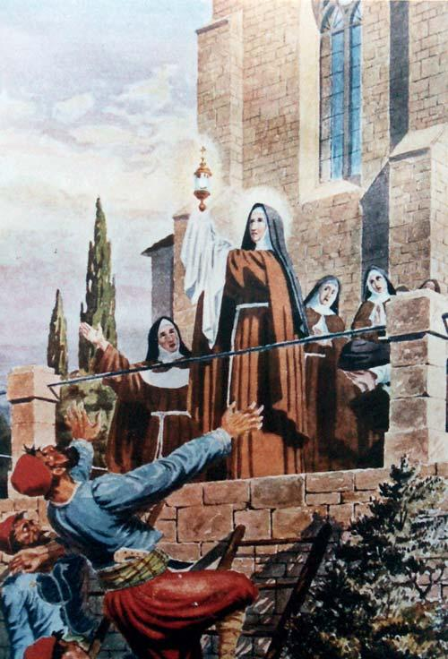

En la época medieval, en una pequeña aldea de Italia, vivía Santa Clara de Asís, una joven de corazón puro y devoción inquebrantable. Su vida se entrelazó con la del gran San Francisco de Asís, y juntos dejaron una huella imborrable en la historia y en los corazones de quienes los rodeaban.
Clara provenía de una familia noble, pero su corazón anhelaba algo más que las comodidades materiales. Admiradora de las enseñanzas de San Francisco, decidió seguir su camino de pobreza y devoción a Dios. A pesar de la oposición de su familia, Clara escapó de su casa y se unió a la comunidad de hermanos franciscanos.
Años más tarde, Clara estableció su propio convento en San Damián, donde abrazó la vida de oración y servicio. Pero la historia que conmueve a los corazones de muchos es su valiente enfrentamiento con un ejército invasor.
En 1240, las fuerzas sarracenas atacaron la ciudad de Asís. Clara, ya enferma y frágil, se postró ante el Santísimo Sacramento y pidió a Dios que protegiera a sus hermanas y a la ciudad que amaba. Se cuenta que una fuerza inexplicable la llenó y, sosteniendo el copón con la Eucaristía, se acercó a la muralla de la ciudad.
Mientras sostenía el Santísimo Sacramento en alto, Clara clamó a Dios por ayuda. Se dice que una fuerza misteriosa descendió, llenando a los atacantes de pánico y desorientación. Sintieron una presencia sobrenatural y huyeron, abandonando su intento de asedio.
La valiente acción de Clara y su profunda fe no solo salvaron a la ciudad, sino que dejaron un testimonio duradero de la capacidad del amor y la fe en Dios para superar cualquier adversidad. Su historia nos recuerda que, incluso en momentos de miedo y peligro, la fe inquebrantable y la conexión con lo divino pueden tener un impacto sorprendente en el curso de los acontecimientos.